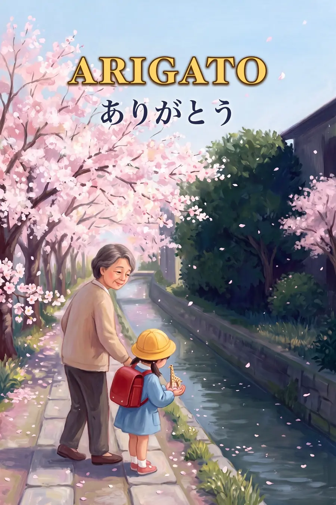

What arigato really means
Arigato grew from an old Japanese word, arigatai. Ari means "to exist" and gatai means "hard to". Something hard to find. Something rare. So every arigato carries a little wonder: what you gave me is rare.
Say it ah-ree-GAH-toh

How Japan says thank you
いただきます
Itadakimasu, before every meal
Families say it together before they eat. It means "I humbly receive", a thank-you to everyone who helped bring the food to the table. When the meal is over, they say gochisosama deshita, "that was a feast", for all the running around it took to make it.
勤労感謝の日
Labor Thanksgiving Day, November 23
Every year Japan sets aside a day to thank the people who work. It grew from an old harvest festival, and children make thank-you cards for workers in their community.
Try it tonight
Before dinner, say "itadakimasu" together and name one person who helped bring the food. After dinner, say "gochisosama" to whoever cooked.
Sources: Wiktionary, arigatou · Nippon.com, itadakimasu · Kids Web Japan, Labor Thanksgiving Day